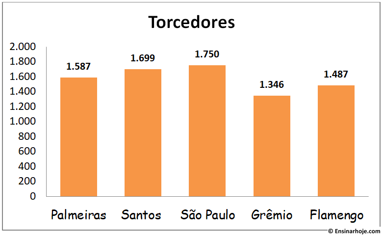
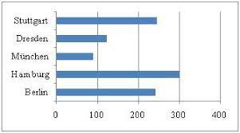
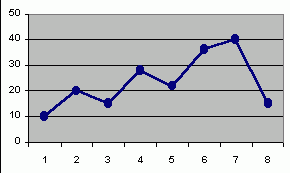
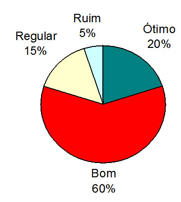
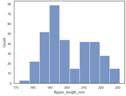
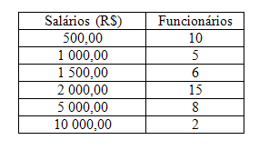

Gráficos é o conteúdo mais fácil do ano: o conceito a gente já conhece tem tempos, é só aprender os diferentes tipos e como cada um é. Os tipos são:
1 - Em Colunas. Representa estatisticas atráves de barras retangulares, organizadas verticalmente.
2 - Em Barras. É semelhante ao gráfico em colunas, porém os retângulos são dispostos horizontalmente
3 - Em Segmentos de reta. É um gráfico "de linha", é traçada uma linha horizontal que se altera verticalmente, formando curvas (praticamente, como num plano cartesiano de função afim).
4 - Em Setores. É a representação gráfica de uma série estatística, em um círculo, por meio de setores.
5 - Histograma. É utilizado para dados agrupados em classes.
6 - Em Tabela. É a famosa tabela.
Exemplos:
1 -

2 -

3-

4-

5-

6-

A representação gráfica das séries estatísticas serve para mostrar os resultados obtidos de forma visual, permitindo chegar-se a conclusões sobre a evolução do fenômeno ou sobre como se relacionam os valores da série. Eu sempre tive dificuldade em desenhá-los, então faz a boa aí e acessa o GeoGebra. É um site que faz os gráficos sem precisar desse teu lápis e borracha aí.
Uma vídeo aula do conteúdo aqui. Ou, assista abaixo.